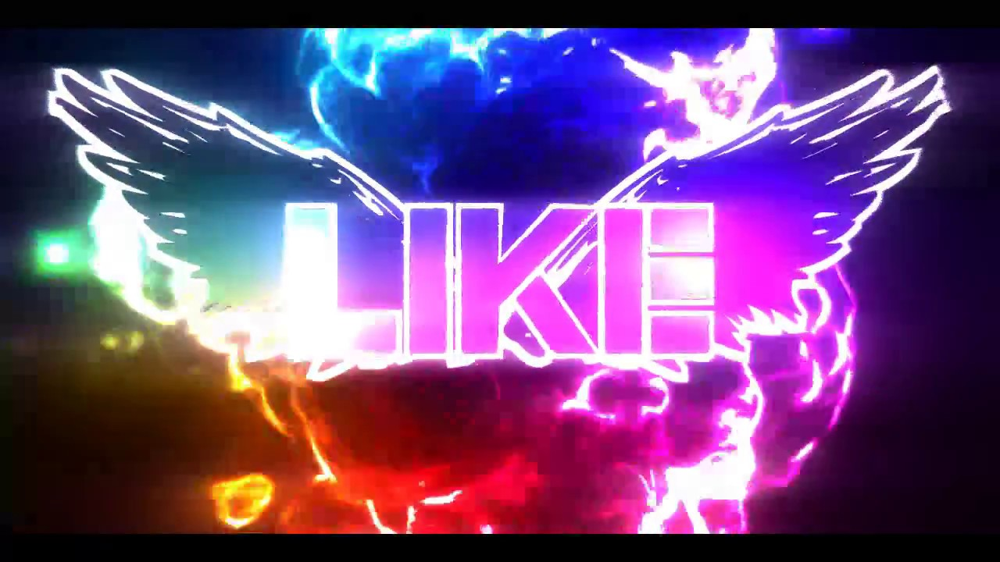

Photo & Video - App Store Downloads on iTunes
 Open Menu Close Menu Apple Shopping Bag Apple Mac iPad iPhone Watch TV Music Support Search apple.com Shopping BagOverview Music Video Charts Opening the iTunes Store. If iTunes doesn't open, click the iTunes application icon in your Dock or on your Windows desktop. Progress Indicator Opening Apple Books. If Apple Books doesn't open, click the Books app in your Dock. Progress Indicator iTunes
iTunes is the world's easiest way to organize and add to your digital media collection.
We are unable to find iTunes on your computer. To download from the iTunes Store, get iTunes now.
Already have iTunes? Click I Have iTunes to open it now.
App Store Photo & Video
View Photo & Video in iTunesA B C D E F G H I J K L M N O P Q R S T U V W X Y Z # Popular Apps WiFiPhoto Krome Studio Plus Slow Shutter Cam Super Likes Edit - PhotoScape CovertCam Square Fit Photo Video Editor Photo Academy H.265 : H.264 Cross Converter Snap It Cap It Jazz! - Powerful Photo Editor cartoon yourself - CartoonFace Lensa: Photo Editing Vee for Video Remo Duplicate Photos Remover ACDSee Pro Dalgona Nooie Cam Lumos: Sun and Moon Tracker Hide Photos Video -Hide it Pro MIX - Photo Editor & Filters AirParrot Remote Collage Maker : Photo Layout Photo Editor & Video Editor Princess Camera Chatbooks: Print Family Photos Camera1 - Black & White Camera Fabby — Photo & Video Editor Teeth Whitener - Photo Editor Video- Photo Mirror Deluxe Spatial Camera Tracker Polarr Photo To Sketch - Drawing book Lightsaber Camera Square Quick - Photo Editor Seed De Flicker Camcorder X Sticker Maker - BeSticky Palette- Cartoon Effect&Filter Body Shape Resizer & Editor LOL Booth Motion Stills - GIF, Collage Miira TelloMe Glitch Video- Aesthetic Effect Lightroom Presets ‒ Light Box ScanCamera TouchOfColor Clone Magic Glitch Video Photo 3D Effect.s Filmr: Video Editor & Effects Circle Crop for Instagram KUNI Cam: Photo Video Editor. BlurEffect-Blur Photo & Video Cine Meter Mega Photo Glasses: Real-Time Camera Effects Diptic B612 - Beauty & Filter Camera ShutterSpeed Pro - Slow Camera DSLR Style FX Cast All Video & TV for Roku My Photo Background Keyboard Elf Dancing - 3D Avatar Control for Phantom 3 Standard, Advanced & Professional Drones TubeBuddy InStories: Aesthetic IG Editor Photographer's Friend 2 Danale myFilm SLR-like Individual Face - extreme distortion filters & effects for selfie camera - Perfect Video - Videoder Mega Photo Pro Facetune2: Best Selfie Editing Live 360 Lomograph- Retro Photo Editor iColorama S Telegram Media Player - Video & Movie Player for Telegram Messenger Print to Size Lorex Cloud Behold : Contouring plus selfie makeup editor app Face Filters App for Instagram PhotoViva - Paintings from your photos! Scrolling Credits Vlogr - Vlog Editor Ultra Wide Angle 8mm Camera Slideshow Add Music To Video Photo Prints Now: CVS Photo Dramatic Black & White Presets & Filters - Koloro Slideshow With Music⋅ SNOW - Beauty & makeup camera Dual Space GoArt – Art Photo Editor Chromakey Camera - Real Time Green Screen Effect to capture Videos and Photos Basketball Wallpaper Portraiture - face makeup kit to retouch photos and beautify your portraits! DoubleTake by FiLMiC Pro Baby Photo Editor · HDR Camera for Instagram Pro Photo Widget: Picture Widgets Night Camera: Low light photos Blur Photo ◎ FaceU - Inspire your Beauty PhotoTiling Fireworks FX Helios Pro PocketPics- Hair & Face Editor Album Lock Keep Pictures Safe Videocraft - Video Editor Pro SketchMee 2 Dr. Seuss Camera - The Grinch EYE CANDY CAMERA - Magic Photo Editor , Eyecandy Cam Filters & Lens Effects Fx Triggertrap Timelapse Pro: advanced intervalometer for your camera Beauty Meter - Are you pretty? Switcher Studio Artoon SlideShow Video Maker & Editor Typewriter⁺ Typing Video Maker Dazz Cam - Old Film & VHS Cam AIportraits - AI Photo Editor Movie Maker: Easy Video Editor Stream_Vision Northern Lights Photo Capture Instant Sketch Pro PauseCam Video Recorder Camera Add Music to Video Maker Add Music To Video Editor Screen Recorder + Yamera (Manual Camera) Impression ToonCamera Camera Remote Watch Mosaic Creator - Face Maker Pencil Sketch Color Monokrom B&W Photo Editor Sketch Me! Sketch&Cartoon Resize for Story - No Crop TocTak Camera -35mm Film Photo Televzr Player Photo Documents CameraKit 2 Videography PhotoDirector Photo Editor Video Crop - Resize Video Skin Tanner iPhotos • Photo editor Perfect GeoTagr DeluxeFX Photo Widget 〇 Flipagram Labs for Slideshow Photonu - multicam photo video A Clear Watermark WiFi Camera - Remote iPhones Funny Movie Maker Pro Pregnancy Pics Pro Camera by Moment Business Logo Creator Boomerang from Instagram ImageSearch - Search on Google InFrame - Photo editor collage Dizzi - Aesthetic Video Maker Fisheye Video Camera Folar - Instant film camera Moon Shadow Overvideo + Video Text Editor Add Music to Videos Fix+: Red Eye Remover Glitchy Psychedelic Camera VHS Strip Designer Director - Movie Maker SPZTracker Add Music to Photo & Video Bday Video Maker, Wishes,Cards Photo Manager Pro 6 Beastcam - Pro Camera Feiyu ON Add Logo Watermark on Photos iWebTV PRO Bye Bye Camera Frameographer Live Wallpaper Maker: 4K Theme MOLDIV VideoLab Camera RX Cast Button 4 Instagram Video Storybeat Birthday Photo Frame - Editor Colorimeter Christmas Hat - Nice Picture Zoom Recorder 360Eye S Perface-轻颜无他拍照神器 Green Phone Everbloom – Stories Editor LumaFusion VlogEasy - Easy Vlog Editing! Selfie Editor: Beauty Makeup Christmas Cards - Photo Editor Epson Creative Print Google Clips FiLMiC Remote Stacheify - Mustache face app Inkwork VIMAGE - Cinemagraph Animator Darkroom Lab Timer Technical Camera NDI Monitor SlideShow Maker' Video+Music - Add Music to Video (For Instagram & Vine, Etc.) Dubsmash - Videos for everyone Anamorphic Cinematic Filters Baby Photo Editor & Journal Yosemite Photographer's Guide Search for Images Pro: Take a picture and discover what it is PhotoDay - Picture Day Gallery Face & Body Editor- Perfect me Beard Booth Studio Silhouette Magic ProCam - Manual Control Camera Vont - Text on Videos Frames - Picture Collage Maker ThePhotoStick Mobile NEW Piercing Photo Editor FX Layout from Instagram AKASO DV DEPSTECH Pet Pics - Pet Photo Editor Night FX Halide Mark II - Pro Camera RNI Films Image Blend Pro: Superimpose Photos Magically المصمم الشامل - كتابة و تصميم Visionn Lift: Story Maker VR Video World - Virtual Reality Teleprompter Pro - Script, Speech and Lyrics Prompter + Glass Tilt Shift Foodie - Camera for life VoiceU-Voice Changer for Snap VideoCam+ Pause & Record Color Pop Effects Photo Editor Artleap by Lightricks Pixel Art Camera Books Business Catalogs Developer Tools Education Entertainment Finance Food & Drink Games Graphics & Design Health & Fitness Lifestyle Magazines & Newspapers Medical Music Navigation News Photo & Video Productivity Reference Shopping Social Networking Sports Stickers Travel Utilities Weather Browse Mac App Store